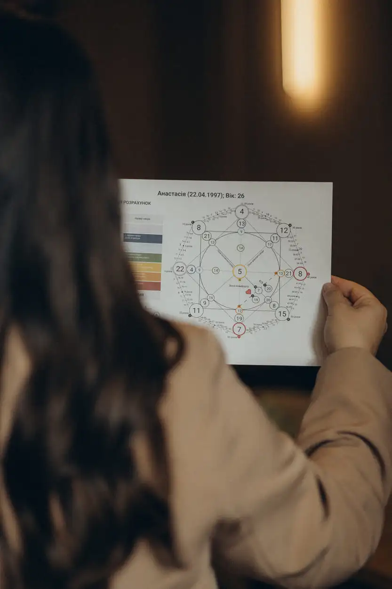
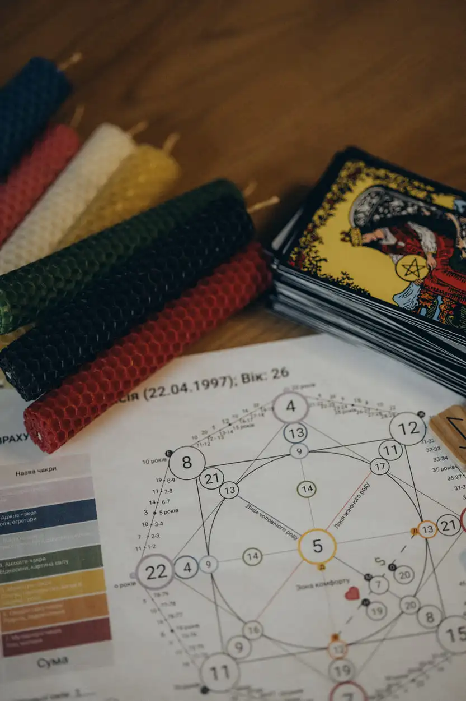
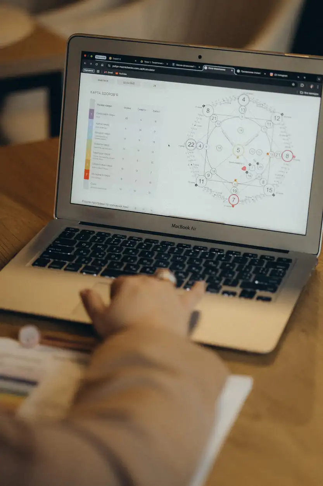
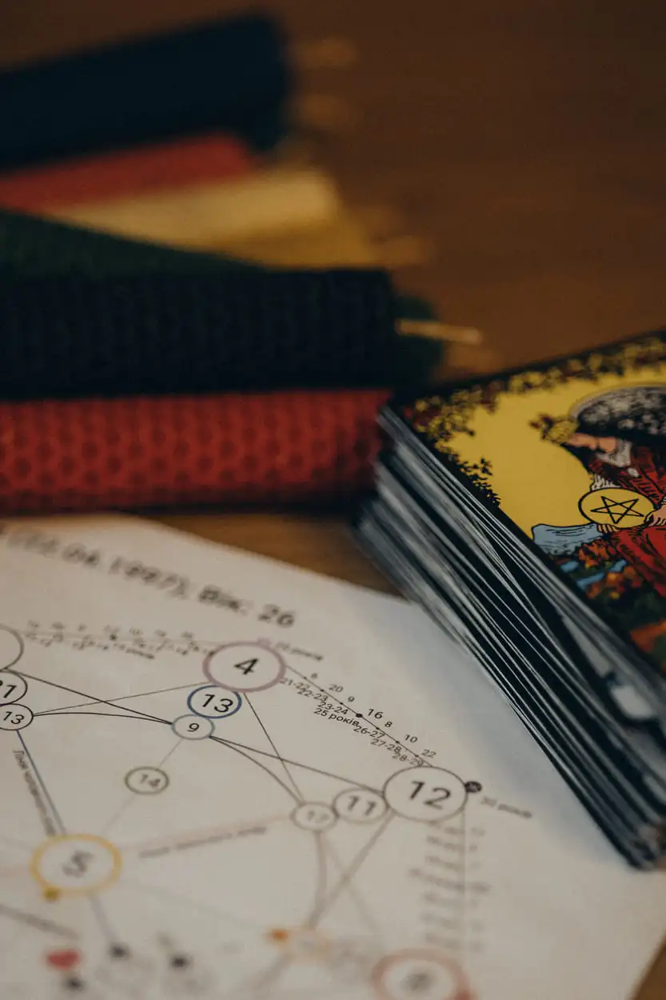

Матриця долі – Розрахунок та Консультації Онлайн
Хочете дізнатися більше про свій життєвий шлях та розкрити приховані можливості?
Матриця долі – це потужний інструмент самопізнання, який дозволяє зрозуміти свої сильні сторони, кармічні завдання та потенціал. Замовте розрахунок матриці долі онлайн або відвідайте консультацію у Києві для глибокого аналізу вашої особистості.
Обирай що тебе цікавить!
-
Дитяча матриця
-
Матриця пари
-
Матриця особистого бренду
 -
Матриця кадендарного року
 -
Прогнозування подій чи дат
 -
Розбори за вашим запитом

Мої консультації доступні для мешканців Києва, Львова, Дніпра, Полтави, Одеси, Черкас, Вінниці та інших міст України.
Послуги з розрахунку матриці долі
Пропоную професійні послуги для клієнтів будь-якого віку та статусу.
- Матриця долі – розрахунок онлайн для особистої консультації;
- Замовити матрицю долі у Києві з можливістю особистої зустрічі;
- Розрахунок матриці долі для дитини – допомога у розвитку талантів та здібностей;
- Дитяча матриця долі – розуміння сильних сторін дитини з раннього віку;
- Матриця долі для сім’ї – аналіз гармонії та взаємодії між членами родини;
- Матриця долі для бізнесу – рекомендації для розвитку кар’єри та бізнесу;
- Матриця долі сумісності – розрахунок енергетичної відповідності партнерів у стосунках або бізнесі;
- Матриця календарного року – прогноз подій та можливостей на рік.
Матриця долі – як це працює?
Матриця долі базується на аналізі вашої дати народження. Вона допомагає розкрити:
- Кармічні завдання
- Життєві випробування
- Ваші сильні та слабкі сторони
- Можливості для зростання та розвитку
Цей метод дозволяє отримати чіткі відповіді на питання, що вас хвилюють, та знайти гармонію у житті.
Матриця долі для бізнесу та партнерства
Матриця долі може бути корисною не тільки для особистого розвитку, а й для планування бізнесу та партнерських відносин. Визначте сильні та слабкі сторони свого бізнесу, знайдіть найкращий час для укладання угод та співпраці.
Вартість послуги
- 800 - 4000 грн.
Де я проводжу консультації?
- Матриця долі Київ – особисті зустрічі та онлайн-консультації.
- Матриця долі Софіївська Борщагівка онлайн.
- Матриця долі Петропавлівська Борщагівка онлайн.
- Матриця долі Борщагівка онлайн.
- Матриця долі Вишневе онлайн.
- Матриця долі Львів онлайн.
- Матриця долі Харків онлайн.
- Матриця долі Дніпро онлайн.
- Матриця долі Одеса онлайн.
- Матриця долі Запоріжжя онлайн.
- Матриця долі Полтава онлайн.
- Матриця долі Чернігів онлайн.
- Матриця долі Суми онлайн.
- Матриця долі Херсон онлайн.
- Матриця долі Миколаїв онлайн.
- Матриця долі Житомир онлайн.
- Матриця долі Рівне онлайн.
- Матриця долі Луцьк онлайн.
- Матриця долі Тернопіль онлайн.
- Матриця долі Івано-Франківськ онлайн.
- Матриця долі Ужгород онлайн.
- Матриця долі Хмельницький онлайн.
- Матриця долі Чернівці онлайн.
- Матриця долі Кропивницький онлайн.
- Матриця долі Черкаси онлайн.
- Матриця долі Вінниця онлайн.
Як записатися на консультацію?
Записатися на консультацію легко – просто зв’яжіться зі мною за телефоном або через соціальні мережі.
Я допоможу вам знайти відповіді на ваші питання та спрямую вас на шлях гармонії.
Контакти
Залиште свій запит зручним для вас способом, і я обов'язково з вами зв'яжуся. Проводжу консультації онлайн для клієнтів по всьому світу. Разом ми проведемо діагностику та розробимо план дій. Звертайтеся зараз!